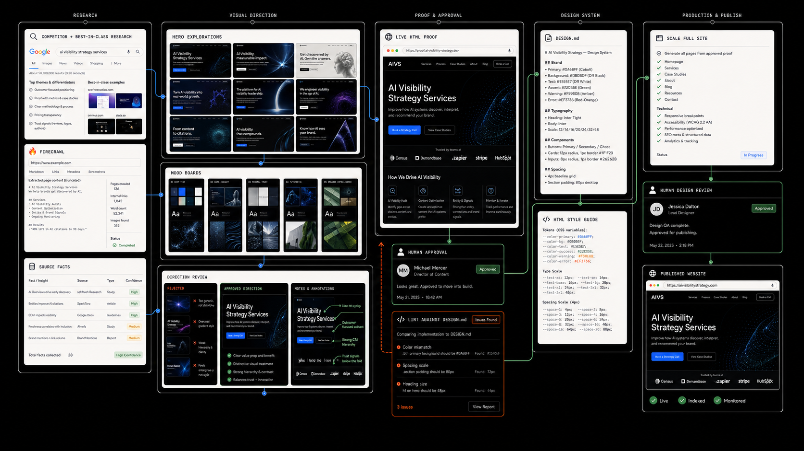

Turns evidence from competitors and best-in-class references into many hero-section explorations, mood boards, an HTML proof, and a documented site system that stays human-reviewed through publishing.

01 · Purpose
Why it exists
Website work can drift when research, imagery, layout references, and implementation live in separate conversations. This workflow uses real competitor and category evidence to shape an inspectable HTML proof, then makes the approved design rules executable before the site expands.
02 · Sequence
How it works
Each stage leaves an inspectable artifact, so the system can scale without quietly losing the approved direction.
01
Scrape the category
Collect existing business information, competitor patterns, and best-in-class website examples while keeping facts separate from inspiration.
02
Generate broad visual directions
Create many hero-section explorations and mood boards spanning typography, colour, imagery, composition, and material treatment.
03
Run direction review
Compare, annotate, and select the strongest direction against the audience, offer, brand assets, references, and page requirements.
04
Build an HTML web page proof
Convert the selected direction into a working, selectable, responsive HTML page so layout and hierarchy can be judged in a browser.
05
Approve and document the system
Once the proof is approved, create a DESIGN.md and an HTML style guide covering typography, color, spacing, imagery, components, motion, and accessibility.
06
Scale and lint the full site
Build the remaining routes and reusable components, then check them against DESIGN.md for drift in tokens, responsive behavior, content rules, and source truth.
07
Human design review before publishing
Capture real breakpoints, review the rendered site, resolve mismatches, and publish only after a person accepts the final surface.
03 · Sources
Tools and data sources
The implementation stack follows the real project. Source truth, executable design rules, and human review are the stable parts.
existing site and business sources
competitor and best-in-class sites
brand documents and exact assets
hero-section explorations
mood boards
direction review
image generation
HTML, CSS, and JavaScript
DESIGN.md
HTML style guide
browser capture and design linting
Output
What ships
Hero explorations, mood boards, the selected visual direction, an HTML proof, DESIGN.md, an HTML style guide, responsive pages, lint evidence, and the reviewed production site.
Review
What stays human
Source approval, direction selection, design taste, narrative hierarchy, claim safety, brand fit, accessibility judgment, design acceptance, and the final decision to publish.
04 · Boundary
Public-safe proof and constraints
Public examples use approved assets and accessible routes; private client material, credentials, and unreleased work stay out. Generated imagery is identified in source notes, exact references are not silently substituted, and a visually plausible mockup is never treated as implementation proof until the real browser surface is captured and tested.